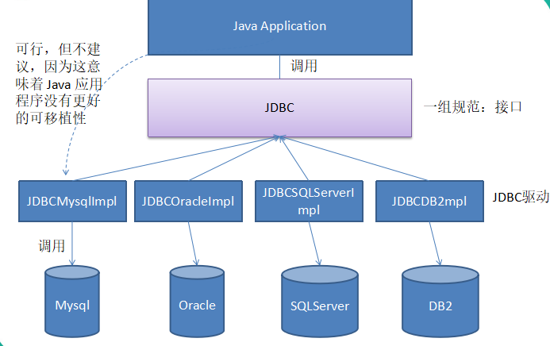
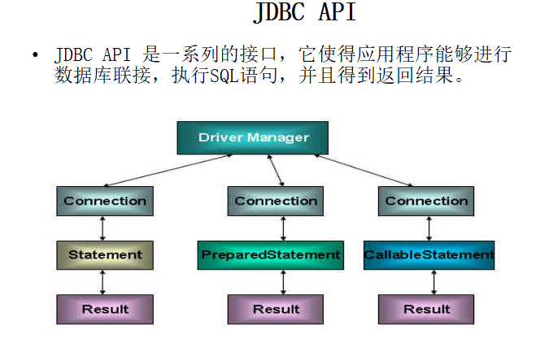
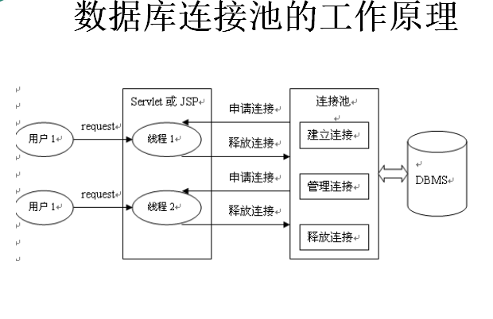

JDBC 详解
一、JDBC 概述
一般数据的存贮与读取，大多数通过各种关系数据库来完成。而JDBC可以说是Java访问数据库的基石。
1、什么是JDBC
JDBC英文名为：Java Data Base Connectivity(Java数据库连接),是一个独立于特定数据库管理系统、通用的SQL数据库存取和操作的公共接口（一组API）。
JDBC定义了一套标准接口，即访问数据库的通用API，不同的数据库厂商根据各自数据库的特点去实现这些接口。如下图

Java.sql.Driver 接口是所有 JDBC 驱动程序需要实现的接口。这个接口是提供给数据库厂商使用的，不同数据库厂商提供不同的实现
在程序中不需要直接去访问实现了 Driver 接口的类，而是由驱动程序管理器类(java.sql.DriverManager)去调用这些Driver实现，下面是API调用相关

2、JDBC 的工作原理
- 加载数据库驱动
使用Class.forName方法，调用这个方法会加载数据库驱动com.mysql.jdbc.driver，向其传递要加载的 JDBC 驱动的类名。DriverManager 类是驱动程序管理器类，负责管理驱动程序，通常不用显式调用 DriverManager 类的 registerDriver() 方法来注册驱动程序类的实例，因为 Driver 接口的驱动程序类都包含了静态代码块，在这个静态代码块中，会调用 DriverManager.registerDriver() 方法来注册自身的一个实例
- 获取数据库连接
Connection接口负责应用程序对数据库的连接，在加载驱动之后，使用url、username、password三个参数，创建到具体数据库的连接
可以调用 DriverManager 类的 getConnection() 方法建立到数据库的连接
JDBC URL 用于标识一个被注册的驱动程序，驱动程序管理器通过这个 URL 选择正确的驱动程序，从而建立到数据库的连接。
JDBC URL的标准由三部分组成，各部分间用冒号分隔。
jdbc:<子协议>:<子名称>
协议：JDBC URL中的协议总是jdbc
子协议：子协议用于标识一个数据库驱动程序
子名称：一种标识数据库的方法。子名称可以依不同的子协议而变化，用子名称的目的是为了定位数据库提供足够的信息
- 访问数据库
在 java.sql 包中有 3 个接口分别定义了对数据库的调用的不同方式：
Statement |
通过调用 Connection 对象的 createStatement 方法创建该对象,通过ResultSet excuteQuery(String sql)和 int excuteUpdate(String sql) 执行sql语句
可以通过调用 Connection 对象的 preparedStatement() 方法获取 PreparedStatement 对象
PreparedStatement 接口是 Statement 的子接口，它表示一条预编译过的 SQL 语句
PreparedStatement 对象所代表的 SQL 语句中的参数用问号(?)来表示，调用 PreparedStatement 对象的 setXXX() 方法来设置这些参数. setXXX() 方法有两个参数，第一个参数是要设置的 SQL 语句中的参数的索引(从 1 开始)，第二个是设置的 SQL 语句中的参数的值
3、API小结
java.sql.DriverManager 用来装载驱动程序，获取数据库连接。
java.sql.Connection 完成对某一指定数据库的联接
java.sql.Statement 在一个给定的连接中作为SQL执行声明的容器，他包含了两个重要的子类型。
Java.sql.PreparedSatement 用于执行预编译的sql声明
Java.sql.CallableStatement 用于执行数据库中存储过程的调用
java.sql.ResultSet 对于给定声明取得结果的途径
4、代码示例
public class Demo { |
jdbc.properties文件
driver=com.mysql.jdbc.Driver |
二、连接池
1、不用连接池的弊端
普通的JDBC数据库连接使用 DriverManager 来获取，每次向数据库建立连接的时候都要将 Connection 加载到内存中，再验证用户名和密码(得花费0.05s～1s的时间)。需要数据库连接的时候，就向数据库要求一个，执行完成后再断开连接。这样的方式将会消耗大量的资源和时间。数据库的连接资源并没有得到很好的重复利用.若同时有几百人甚至几千人在线，频繁的进行数据库连接操作将占用很多的系统资源，严重的甚至会造成服务器的崩溃。
对于每一次数据库连接，使用完后都得断开。否则，如果程序出现异常而未能关闭，将会导致数据库系统中的内存泄漏，最终将导致重启数据库。
这种开发不能控制被创建的连接对象数，系统资源会被毫无顾及的分配出去，如连接过多，也可能导致内存泄漏，服务器崩溃。
2、如何解决
为解决传统开发中的数据库连接问题，可以采用数据库连接池技术。
数据库连接池的基本思想就是为数据库连接建立一个“缓冲池”。预先在缓冲池中放入一定数量的连接，当需要建立数据库连接时，只需从“缓冲池”中取出一个，使用完毕之后再放回去。
数据库连接池负责分配、管理和释放数据库连接，它允许应用程序重复使用一个现有的数据库连接，而不是重新建立一个。
数据库连接池在初始化时将创建一定数量的数据库连接放到连接池中，这些数据库连接的数量是由最小数据库连接数来设定的。无论这些数据库连接是否被使用，连接池都将一直保证至少拥有这么多的连接数量。连接池的最大数据库连接数量限定了这个连接池能占有的最大连接数，当应用程序向连接池请求的连接数超过最大连接数量时，这些请求将被加入到等待队列中。
3、连接池的优点
可以看如下的工作原理图

优点
- 资源重用：
由于数据库连接得以重用，避免了频繁创建，释放连接引起的大量性能开销。在减少系统消耗的基础上，另一方面也增加了系统运行环境的平稳性。 - 更快的系统反应速度
数据库连接池在初始化过程中，往往已经创建了若干数据库连接置于连接池中备用。此时连接的初始化工作均已完成。对于业务请求处理而言，直接利用现有可用连接，避免了数据库连接初始化和释放过程的时间开销，从而减少了系统的响应时间 - 新的资源分配手段
对于多应用共享同一数据库的系统而言，可在应用层通过数据库连接池的配置，实现某一应用最大可用数据库连接数的限制，避免某一应用独占所有的数据库资源 - 统一的连接管理，避免数据库连接泄露
在较为完善的数据库连接池实现中，可根据预先的占用超时设定，强制回收被占用连接，从而避免了常规数据库连接操作中可能出现的资源泄露
4、常见的数据库连接池
JDBC 的数据库连接池使用 javax.sql.DataSource 来表示，DataSource 只是一个接口，该接口通常由服务器(Weblogic, WebSphere, Tomcat)提供实现，也有一些开源组织提供实现。
常见的数据库连接池：
- c3p0
- dbcp
- druid
- proxool
5、简单的代码示例
c3p0配置文件c3po-config.xml
|
修改获取连接，通过连接池获取connection
private static DataSource dataSource = null; |